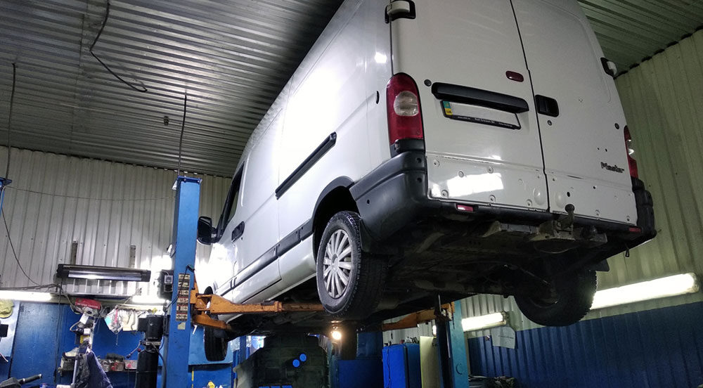
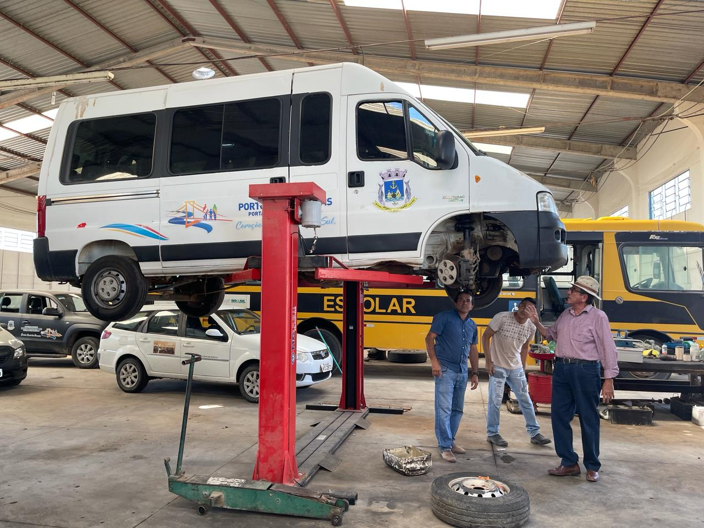

Nosso Espaço e Trabalhos
🛠️ Nossa Oficina
Ambiente organizado e equipado com as melhores ferramentas para atender sua van com qualidade.

🚐 VANS que Atendemos
Especialistas em todas as marcas: Fiat Ducato, Mercedes Sprinter, Volkswagen Delivery, Iveco Daily, Toyota Hilux SW4, e muitas outras.
🔧 Serviços em Andamento
Registros dos nossos trabalhos - do diagnóstico à entrega final.
